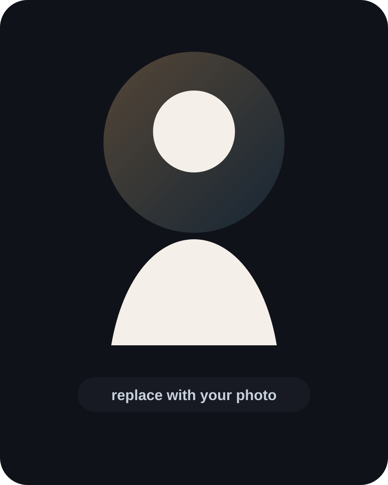

BOTtemplate
Название бота
Кратко опиши, какую задачу решает бот: принимает заявки, отвечает клиентам, продаёт товары или автоматизирует процесс.
Функция 1Функция 2Функция 3
Choose language
Select a language to view the portfolio.
Telegram Bots • AI Automation • Websites
Я создаю Telegram-ботов, AI-помощников, лендинги и сайты-визитки для реальных задач: заявки, автоматизация, продажи, запись клиентов и удобная коммуникация.

Resume
Я помогаю бизнесам и экспертам запускать понятные цифровые инструменты: Telegram-ботов, AI-ботов и сайты. У меня около 5 лет практики, включая клиентские проекты через Kwork, Upwork и ProfiRU.
Мой подход — сначала понять задачу, потом собрать удобную структуру, продумать сценарий пользователя и довести проект до рабочего результата.
Telegram Bots
Кратко опиши, какую задачу решает бот: принимает заявки, отвечает клиентам, продаёт товары или автоматизирует процесс.
Добавь понятное описание: для кого создан бот, какие действия выполняет и почему он удобен для клиента.
После разработки замени этот текст на живое описание проекта, его ключевые функции и пользу для бизнеса.
Websites
Опиши сайт простыми словами: для кого он сделан, какие блоки есть и какую цель закрывает.
После публикации добавь сюда реальное описание сайта, его особенности и ссылку для просмотра.
Используй эту карточку для будущего сайта: добавь название, описание, функции и ссылку.
Contacts
Есть идея для Telegram-бота, сайта или автоматизации? Напиши мне — разберём задачу и подберём понятное решение.
BOT PROJECT
Полное описание бота: какую проблему он решает, как пользователь с ним работает и какие функции внутри.
BOT PROJECT
Полное описание бота: какую проблему он решает, как пользователь с ним работает и какие функции внутри.
BOT PROJECT
Полное описание бота: какую проблему он решает, как пользователь с ним работает и какие функции внутри.
SITE PROJECT
Полное описание сайта: цель, аудитория, структура, главные блоки и ссылка для просмотра.
SITE PROJECT
Полное описание сайта: цель, аудитория, структура, главные блоки и ссылка для просмотра.
SITE PROJECT
Полное описание сайта: цель, аудитория, структура, главные блоки и ссылка для просмотра.